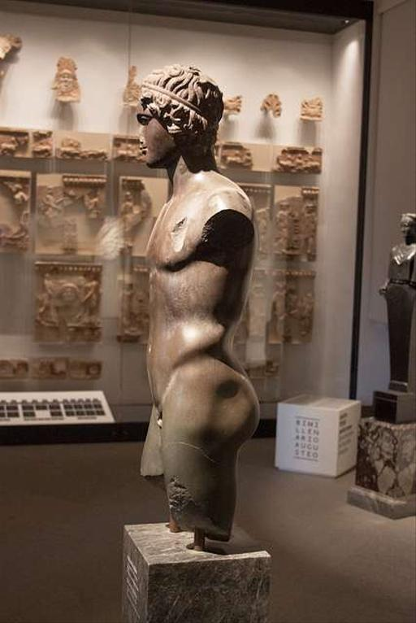
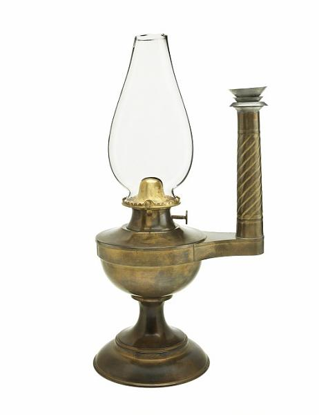
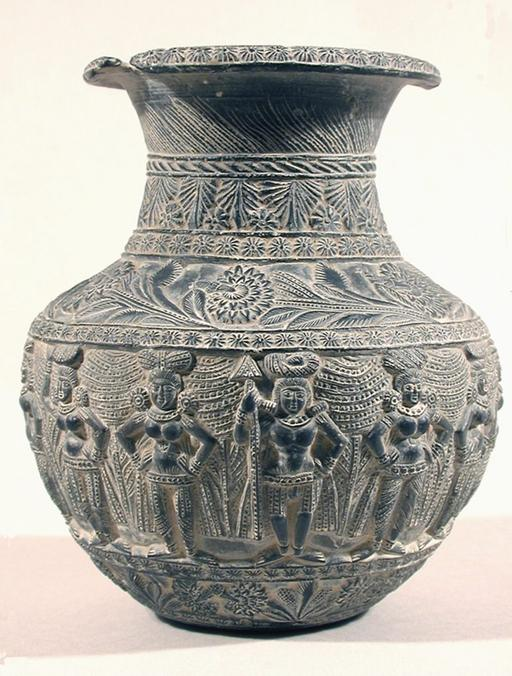
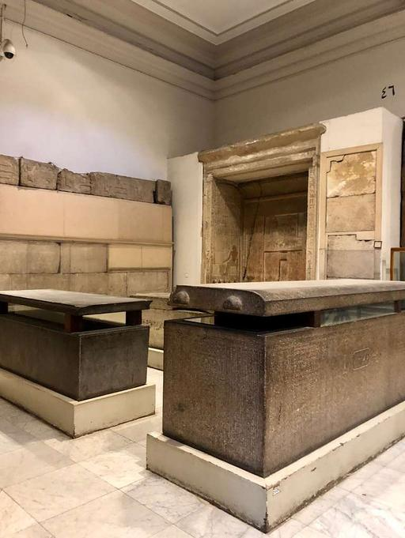

Our idea
A museum made for curious people
Our museum is not very large, but every room has something interesting. We believe that history becomes easier to understand when we can see the real objects.
Read our storyA quiet place for old stories
Welcome to Old Stones Museum, a small museum that keeps local objects, tools, and stories from the past.
Explore the exhibits
Our idea
Our museum is not very large, but every room has something interesting. We believe that history becomes easier to understand when we can see the real objects.
Read our storyStart here

A simple lamp that was used in homes before electricity.

Its small marks show how it was made by hand.

A key found near an old house in the town.